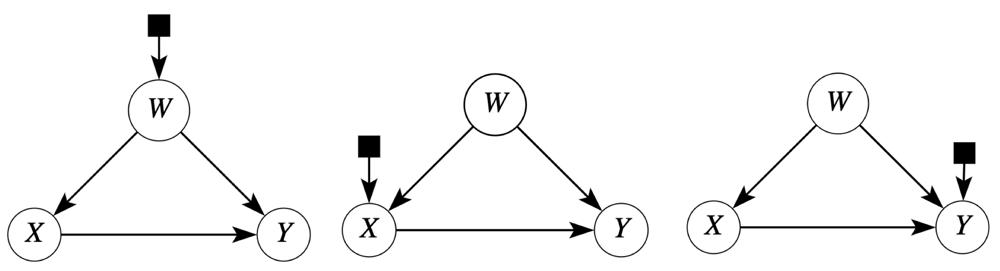
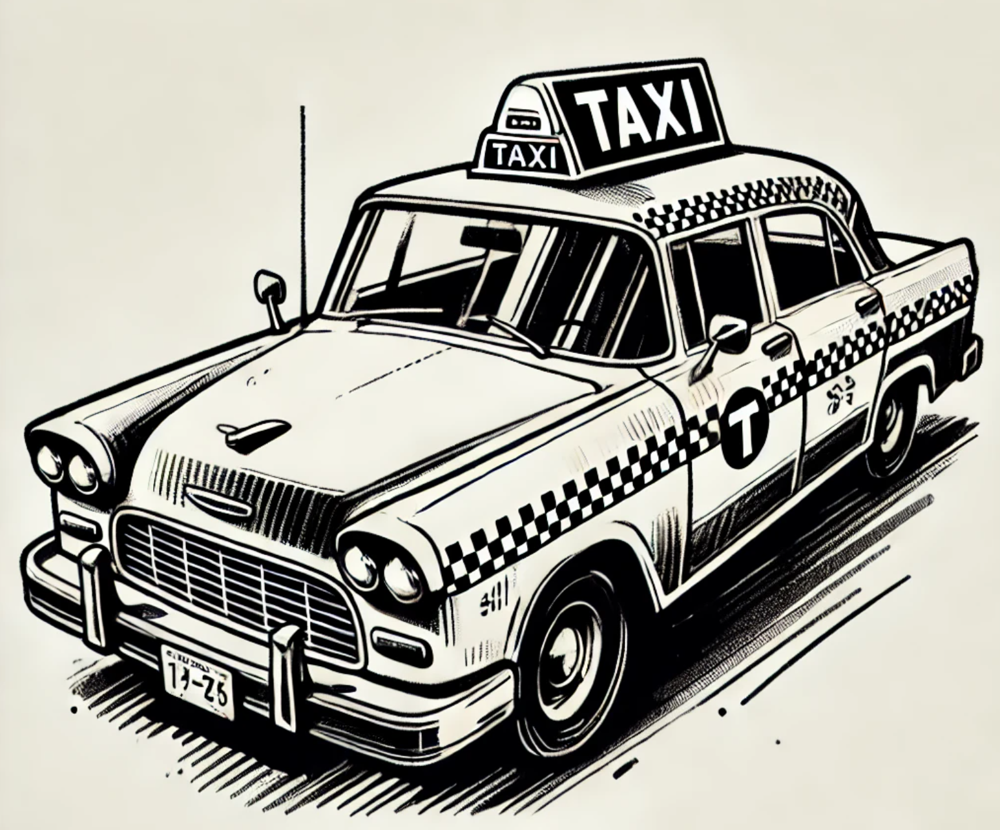
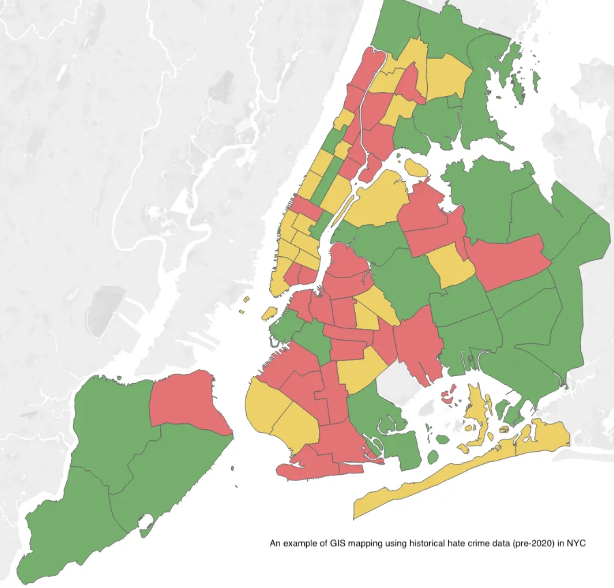
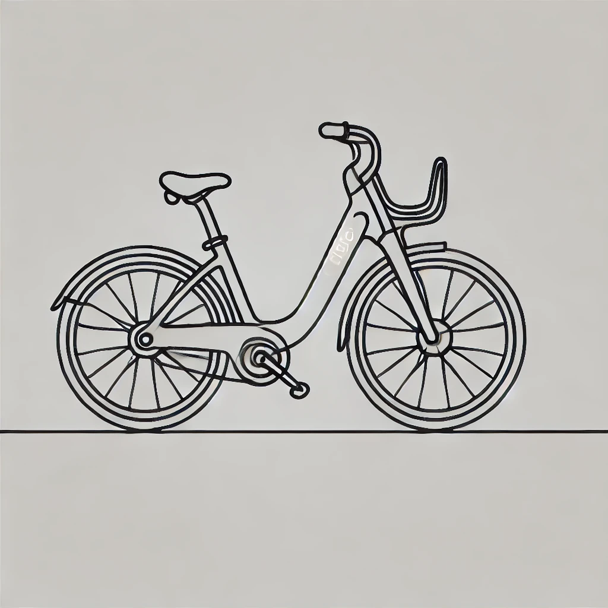
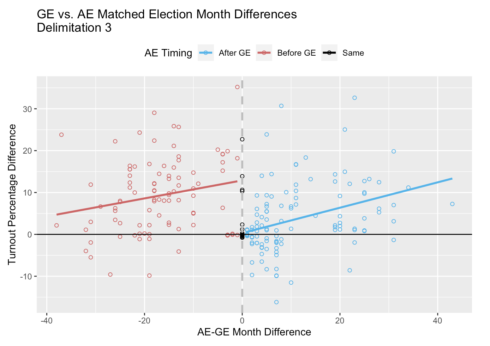
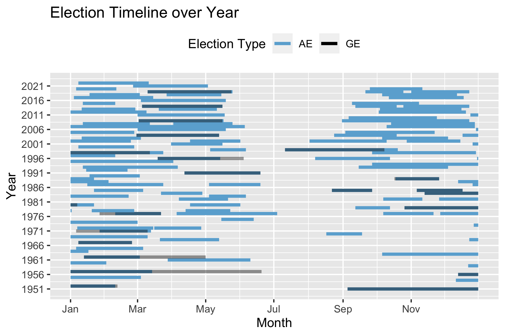

Transportability & External Validity
OngoingEvaluating women's political reservation effects in India.

Random Forest Classifier
2019Predicting NYC taxi locations.

NYC[x] Innovation Fellowship
2020-2021Quantifying and mapping hate crimes underreporting.

Citi Bike Ride Patterns
2023Inferential analysis for sustainable transportation.

Columbia Data Science Institute Scholar
2024Using NLP to map language patterns across Rio de Janeiro.

Voter Turnout in India
2024Measuring hierarchical and geographic voter behavior.

Archival Election Schedule Dataset
2022Using archival work to build a dataset of election dates.